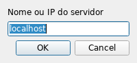

No Desktop, abra a Central de Administração Remota e informe o nome ou IP de um host autorizado. O aplicativo abre o console do servidor no navegador. Entre com sua conta de administrador ou de operador e localize a máquina virtual. As ações disponíveis dependem das permissões delegadas pelo administrador do host.
